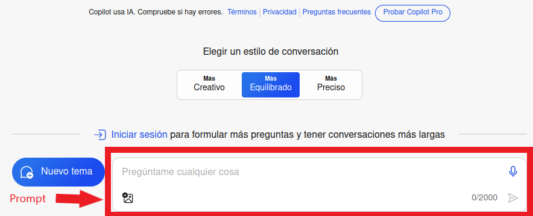
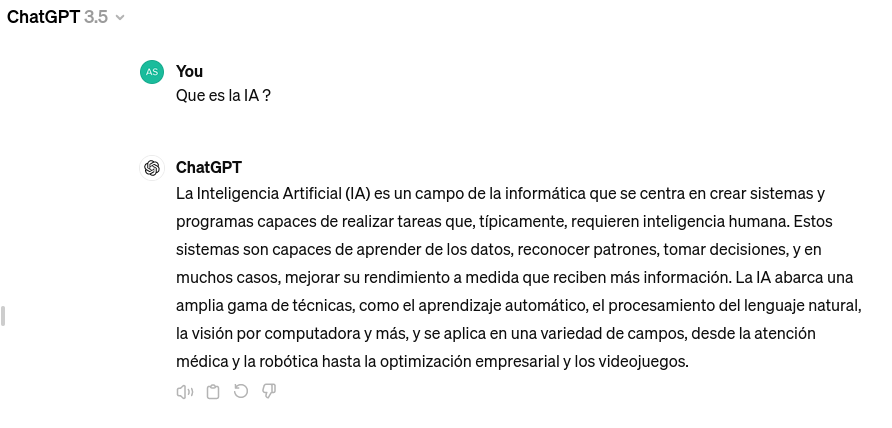
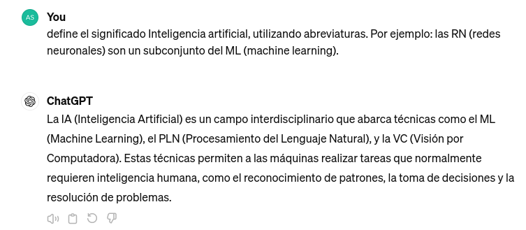
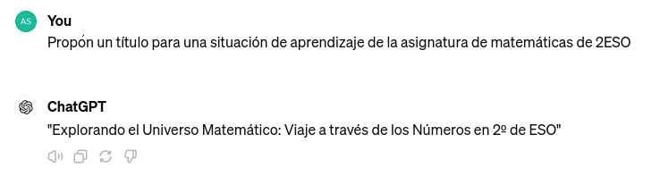
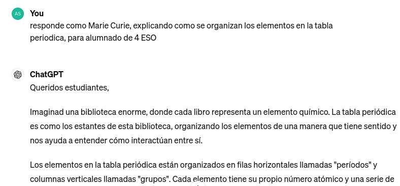
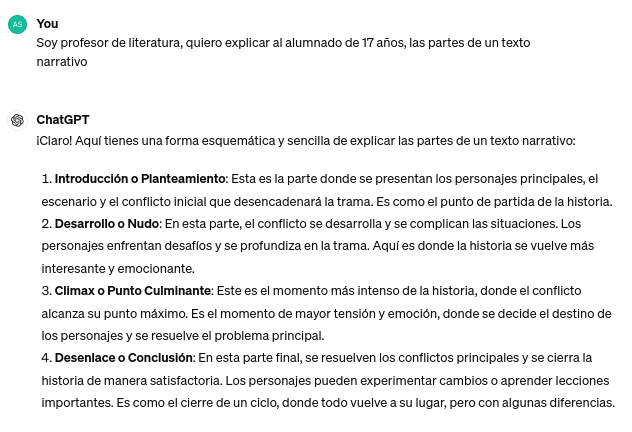

IA conversacional¶
La IA conversacional es una parte de la IA que permite a las máquinas participar en diálogos interactivos como si fuesen humanos. Esta tecnología comprende e interpreta el lenguaje humano para simular conversaciones naturales.
Características de la IA conversacional:
-
Entiende los patrones de comunicación humana y responde con un diálogo contextual.
-
Incorpora algoritmos de IA y tecnología de procesamiento del lenguaje natural (PLN) para crear transiciones de diálogo fluidas.
-
Genera conversaciones haciendo que sean difíciles de distinguir de las interacciones humanas.
-
Mantiene el contexto durante toda la conversación.
Esta tecnología ofrece una amplia gama de posibilidades para crear contenidos educativos innovadores y personalizados. Aquí se presentan algunas formas en que se puede utilizar la IA generativa para este fin:
Generación de Problemas y Ejercicios¶
La IA generativa puede ser utilizada para generar una variedad de problemas y ejercicios en diversas áreas del conocimiento. Por ejemplo, en matemáticas, puede generar problemas de práctica con diferentes niveles de dificultad o incluso adaptarlos al progreso individual del estudiante. En ciencias, puede generar simulaciones interactivas que permitan a los estudiantes experimentar con fenómenos naturales de manera virtual.
Creación de Material Didáctico Personalizado¶
Con la IA generativa, es posible crear material didáctico personalizado que se adapte a las necesidades y preferencias de aprendizaje de cada estudiante. Esto incluye la generación de textos, gráficos, videos y otros recursos multimedia que aborden los intereses individuales de los estudiantes y refuercen los conceptos clave de manera efectiva.
Desarrollo de Tutoriales Interactivos¶
La IA generativa puede ser utilizada para desarrollar tutoriales interactivos que guíen a los estudiantes a través de conceptos complejos de manera dinámica y personalizada. Estos tutoriales pueden adaptarse según el progreso del estudiante, proporcionando retroalimentación instantánea y sugerencias de mejora.
Son chats
Muchas IAs se presentan en forma de chat, lo que permite entablar un dialogo de aprendizaje sobre conceptos e ideas.
Hay que plantear cuestiones adecuadas, y generar una dinámica de conversación orientada a las necesidades formativas concretas.
Creación de Contenido Creativo¶
La IA generativa puede ser una herramienta poderosa para fomentar la creatividad en el aula. Por ejemplo, se pueden utilizar algoritmos generativos para crear obras de arte, composiciones musicales, historias o poemas originales. Esto no solo ayuda a los estudiantes a desarrollar su creatividad, sino que también les permite explorar diferentes formas de expresión artística.
Personalización del Material de Estudio¶
Utilizando técnicas de IA generativa, es posible personalizar el material de estudio para adaptarlo a las necesidades individuales de cada estudiante. Esto incluye la generación de resúmenes, esquemas y ejemplos específicos que se ajusten al nivel de conocimiento y estilo de aprendizaje de cada estudiante.
Una poderosa herramienta
La IA generativa ofrece numerosas oportunidades para crear contenidos educativos dinámicos, interactivos y personalizados que pueden mejorar significativamente la experiencia de aprendizaje de los estudiantes.
Al integrar esta tecnología de manera efectiva en el aula, los educadores pueden potenciar el proceso de enseñanza y ayudar a los estudiantes a alcanzar su máximo potencial.

Recomendaciones para el buen uso de la IA¶
El prompt es el texto que se redacta para comunicar las instrucciones a la IA. Una elaboración adecuada ayuda a obtener resultados satisfactorios.
Algunos consejos básicos:
- Realizar preguntas claras y concisas.
- Usar palabras claves del tema.
- Desglosar preguntas complejas en preguntas más simples.
- Ser persistente si no se consigue una respuesta satisfactoria, es decir volver a reescribir la pregunta formulada de otra forma.
- Si vamos a cambiar el tema de la conversación, es mejor comenzar una conversación nueva.
- Validar la información obtenida siempre.
Herramientas conversacionales¶
Aunque existen muchas herramientas que utilizan la IA generativa. La mayoría son derivados de los modelos más potententes y conocidos:
Condiciones de uso de los modelos más conocidos.
ChatGPT¶
Es necesario estar registrado para poder utilizarlo. Dispone de una versión superior, de pago por suscripción. La versión actual gratuita es GPT-4o, por defecto, hasta consumir los items diarios, pero se puede cambiar a otros modelos como o4-mini o GTP-4o-mini siendo estos últimos más rápidos.
Al iniciar sesión se puede consultar y continuar conversaciones anteriores, ya que quedan almacenadas en el historial.
Se pueden utilizar diferentes idiomas sin que se aprecien diferencias importantes en las respuestas obtenidas.
Se pueden generar diferentes conversaciones al mismo tiempo y cada una sigue un hilo diferente. Si se alcanza el límite de conversaciones se genera un aviso para ir eliminando algunas de ellas.
Después de generar cada respuesta, esta puede ser valorada, reproducida en audio, o copiada. Si se solicita que la regenere, además solicitará que se haga una comparación entre los resultados ofrecidos.
Elección del modelo adecuado para ofrecer una respuesta de manera automática. Entre las posibilidades disponibles, elige la más adecuada de manera automática.
Incorpora la opcion búsqueda web que permite obtener información más actual. Anteriormente no era posible obtener referencias actuales de la web.
Con la opción Explorar GPT se puede acceder a bot creados por otros usuarios para propósitos específicos. Son chats con funcionalidad específica que pueden ajustarse mejor a nuestras necesidades.
Constante y frecuente actualización
Los servicios y características que ofrece pueden variar con bastante rapidez, debido a varias causas.
Hay que estar atento a las novedades y posibilidades nuevas que se abren.
También es posible que se incorporen nuevas características que no siempre han estado disponibles.
Algunas limitaciones:
- No es posible acceder directamente a sitios de internet.
- No interactua con dispositivos externos.
Copilot¶
Se trata de una IA generativa conversacional basada en ChatGPT. Cambia el entorno de uso y las prestaciones que ofrece se ajustan a otros parámetros.
Tiene cierta integración con el buscador bing.com, de manera que si se utiliza este último, se pueden formular preguntas directas y conseguir amplias respuestas sintetizadas a partir de los resultados de la búsqueda web. También aparecen las referencias de Internet a los sitios relacionados.
No es necesario estar registrado para utilizar copilot de manera que el texto de la búsqueda se puede trasladar directamente a la IAgenerativa. Ofrece un entorno conversacional, y acompaña las respuestas de imágenes ilustrativas y enlaces a páginas web que considera relevantes.
Cambio e integración con office365
Actualmente está en un proceso de cambio de denominación. Microsoft está cambiando el nombre de la herramienta office 365 por copilot.
De esta manera al utilizar la suit offimática, ya se incorpora toda la tecnología de copilot.
Hay un límite de conversaciones en cada chat, si se alcanza este límite se puede iniciar uno nuevo o iniciar sesión, para no tener esta limitación.
Las respuestas obtenidas también se pueden valorar, copiar y escuchar, además permite exportar directamente a un documento tipo pdf, word o texto.
Otra característica es que permite establecer el estilo de cada conversación entre tres grados de creatividad.
Se pueden utilizar referencias a sitios web, y también es posible adjuntar imágenes, aunque para crear imagenes en la respuesta es necesario iniciar sesión.
Dispone de Laboratorios donde ofrece una visión de las nuevas utilidades y herramientas que se están desarrollando de manera experimental. Como Copilot Podcast o Copilot Vision para tareas más específicas.
Su principal propósito es la integración en aplicaciones de escritorio para actuar como un copiloto en la actividad con las herramientas de software específico.

Gemini¶
IA generativa conversacional de Google, anteriormente se llamaba Bard ahora es Gemini. Es necesario disponer de una cuenta de Google personal o Workspace (empresarial no educativa), y ser mayor de 18 años si estás en el espacio europeo. La versión Gemini Advance actualmente está solo disponible en inglés.
Las respuestas recibidas permiten realizar varias acciones, como son: valorar la respuesta, copiar, compartir creando un enlace un documento o un correo (en las herramientas de Google). Otra opción muy interesante es modificar la respuesta que permite definir si se quiere acortar, alargar o cambiar el tono a más informal o más profesional.
Otra opción es comprobar respuesta, que marca el texto de la respuesta en verde o rojo, en función de si ha encontrado referencias con el buscador similares a la respuesta.
En constante aprendizaje
En la propia información de la herramienta se insiste mucho en considerar la herramienta en una fase inicial, dentro de un proceso de aprendizaje continuo.
Los resultados pueden parecer inconexos y con excesivas referencias a contenido de sitios web, lo que puede ser considerado como una mezcla de la tecnología de búsqueda con la IA generativa.
Claude¶
Acceso a la tecnología de IA avanzada de Anthropic sin costo.
Capacidad para realizar conversaciones de texto completas.
Ayuda con redacción, resúmenes, ideas creativas y respuestas a preguntas.
Interfaz fácil de usar.
Disponible en varios idiomas, como puedes ver.
Se puede cambiar el formato de las respuestas, desde un desplegable en el espacio para escribir el prompt.
Algunas limitaciones:
- Número limitado de mensajes por día (comparado con suscripciones de pago).
- Sin acceso al modo de "razonamiento extendido" (exclusivo de cuentas Pro).
- Posible tiempo de respuesta más lento en horas pico.
- Sin acceso a ciertos modelos más avanzados de la familia Claude 3.
- Limitaciones en el tamaño de los archivos que se pueden cargar y procesar.
DeepSeek¶
Funcionalidades básicas de IA: Acceso a tareas como respuestas a preguntas, generación de texto (ej. correos, resúmenes) y asistencia en aprendizaje o investigación simple.
Tareas cotidianas: Ayuda en redacción, recomendaciones, explicaciones conceptuales o soporte para proyectos personales no comerciales.
Modelo estándar: Uso de una versión base del modelo, suficiente para necesidades generales.
Se pueden adjuntar imágenes y documentos textuales.
Algunas limitaciones:
-
Límites de uso: Restricciones en el número de consultas por día/mes.
-
Funcionalidades avanzadas bloqueadas: Sin acceso a características premium como análisis detallado, personalización avanzada o integraciones.
-
Velocidad y prioridad: Respuestas más lentas frente a usuarios de pago.
-
Uso comercial restringido: Posible prohibición de emplearlo para fines comerciales o empresariales.
-
Soporte limitado: Atención al cliente básica o inexistente.
El Prompt de la IA¶
El prompt es una instrucción, una pregunta o un texto que se utiliza para interactuar con un sistema de IA. Es el elemento esencial para que la IA empiece a funcionar. El prompt que nosotros introducimos va a influir en el tipo de respuesta que genera el modelo. Por lo tanto, es muy importante la elección del prompt ya que afecta directamente al tipo y calidad de la respuesta generada.
Según el tipo de prompt, vamos a tener un resultado más o menos optimizado.
Info
Dada la importancia de conseguir un prompt optimizado, ha surgido un perfil profesional llamado Ingeniero de prompts para desarrollar instrucciones precisas para generar buenos resultados para la empresa.
Es importante que los prompts tengan todo el contexto que necesitas para obtener un resultado, y también que no tengan ambigüedades o dobles sentidos que puedan hacer que los algorimos de una IA interpreten de firna errónea lo que le pedimos.
Prompts efectivos¶
Criterios para realizar un buen prompt:
-
Preguntas claras y específicas.
-
Utilizar palabras clave relacionadas con tu tema.
-
Desglosar preguntas complejas en partes más simples.
-
Comprobar la respuesta obtenida por si hay algo incorrecto.
-
Cuando iniciamos una conversación con una IA, lo que ha dicho antes influye en las respuestas actuales, si se está cambiando de tema o no gusta cómo está respondiendo es mejor comenzar una conversación nueva.
-
Experimentar. Si no se obtiene lo que se quiere, hay que probar a cambiar la forma de hacer las preguntas, los datos que le proporcionamos, el tono con el que le hablamos, el rol que le hemos proporcionado, etc.
Ejemplo de un prompt básico y correcto:

Un prompt contextualizado:

Elementos del prompt¶
Una posible forma de generar un buen prompt puede ser la siguiente:
[Tema o Tarea] [Contexto] [Ejemplo] [Persona] [Formato] [Tono]
Un buen prompt
No es necesario incluir todos los elementos en todo prompt. Se puede ir aportando matices conforme se van recibiendo respuestas.
- Tarea o tema: Descripción específica de qué se quiere obtener. Verbos de acción, conviene que sea uno para evitar la multitarea. Puede ser, crear preguntas sobre un tema específico, obtener la solución a una tarea, una explicación ámplia de un concepto, evaluar una actividad, etc.
- Contexto: Detalles adicionales que ayudan a definir la situación. Por ejemplo, detalles sobre un problema de un curso de 4 de primaria que están intentando resolver.
- Ejemplo: Modelo que sirve de referente.
- Persona o rol: Cómo tiene que actuar la inteligencia artificial. Por ejemplo, un profesor de física, un amigo dando consejos, un especialista en mecanica de buques, etc.
- Fomato: Organización de la respuesta. Por ejemplo, una hoja de cálculo, un esquema de diapositivas, el código de un programa, Moodle XML, etc.
- Tono: El sentido que tiene que dar a la conversación. Ayuda a definir el nivel de detalle y el lenguaje que debe utilizar en la respuesta. Por ejemplo, amigable, cariñoso, estricto, agresivo, divertido, etc.
Aviso sobre resultados
Recuerda que todas las herramientas avisan en sus condiciones de uso que no son responsables del uso de las respuestas, siendo al usuario quién debe considerar la validez de los contenidos obtenidos.
Ejemplos de prompts¶
Ejemplo 1:

Ejemplo 2:

Ejemplo 3:

Recuerda
Es mejor reiniciar una conversación nueva si quieres cambiar el tema, el rol, el contexto o el usuario final.